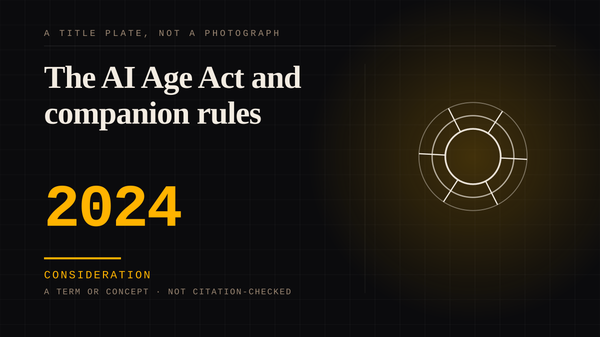

A term or concept · 2024 · AI
The AI Age Act and companion rules
Legislative proposals in the US and EU that would restrict emotional attachment to minors specifically, rather than restricting the product generally.

The first regulatory attempt to regulate the attachment rather than the technology, which is the correct target and almost certainly the wrong approach. You cannot outlaw a feeling without a definition of it.
Consideration. The part where somebody stops and thinks. The research, the diagnosis, the ethics, the lawsuits, the regulators. Roughly fifty years of arguing with itself about whether this is a relationship.
Where it sits
2010 2010+ · 2024 2026
Not yet stood behind. The entry is real. A person has not read the citation and confirmed it, so treat the date as approximate until they do.
Connected · 2 out, 0 in
It sits in
The full timeline → · The database → · See it in the atlas →